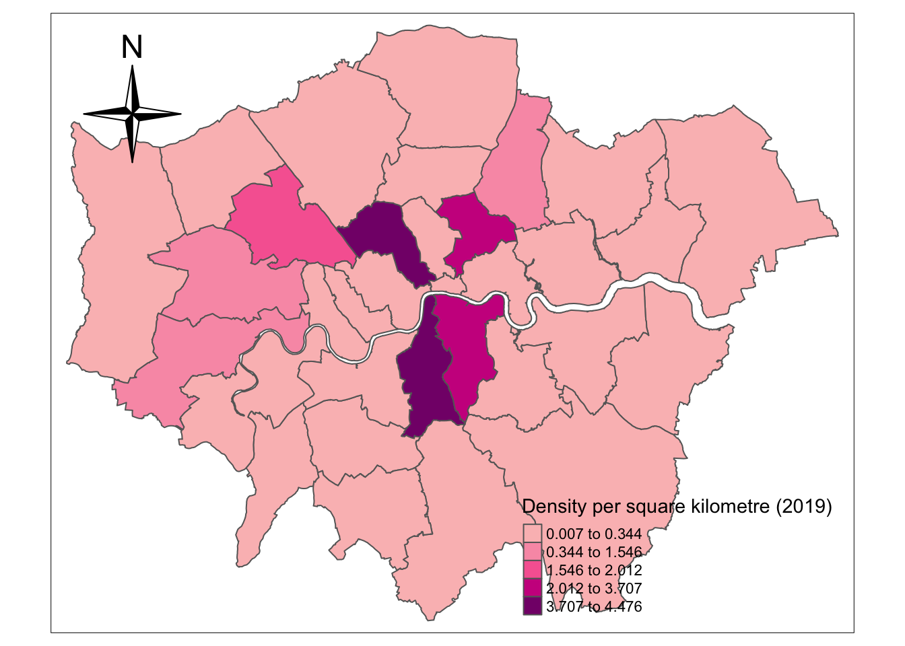
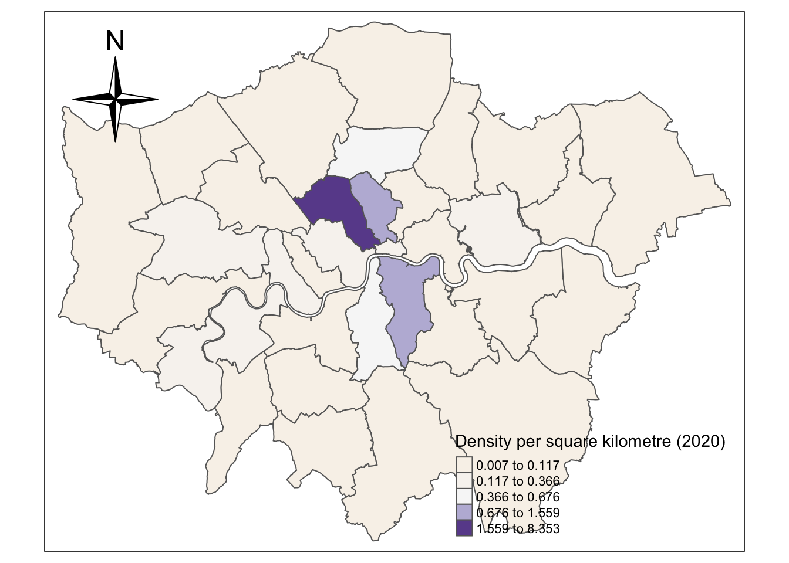

Section 6 Visualisation and comparison of the density of London EV charge point between two years
6.1 Data cleaning for mapping
You should split the NCR dataset to two dataset of two years, and merged these two processed dataset with geometric data respectively. Then we calculate the density for two years. Finally we can visualise and map the density
#5.1 process the data to divide them by years(2019 & 2020)
df1<-subset(df,year==2019) #2019 year
df2<-subset(df,year==2020) #2020 year
# EV charge points created in 2019
# sdf1<-merge(London_Borough,df1,by="GSS_CODE")
sdf1<-merge(London_Borough,df1,by="GSS_CODE",all = TRUE)
sdf1<-sdf1[,c("GSS_CODE","geometry","longitude","latitude")]
# EV charge points created in 2020
# sdf2<-merge(London_Borough,df2,by="GSS_CODE")
sdf2<-merge(London_Borough,df2,by="GSS_CODE",all = TRUE)
sdf2<-sdf2[,c("GSS_CODE","geometry","longitude","latitude")]6.2 The density of data in 2019
First, you should calculate the density and transform the unit of area from m^2 o km^2. Then, select the necessary columns and add frequency of samples grouped by GSS_CODE. In other words, you get the numeric and spatial data of EV charge point for each borough of London.
# Data preparation
nsdf1 = sdf1%>%
add_count(GSS_CODE)%>%
mutate(area=st_area(.))%>%
# Use dplyr::mutate to calculate the density of the charge point for each borough
mutate(density=n*1000*1000/area)
# because the st_area default unit is square metre
# select the following variables---"density","GSS_CODE","n"(the count of GSS_CODE)
nsdf1 = dplyr::select(nsdf1,density,GSS_CODE, n)
nsdf1 = nsdf1%>%
group_by(GSS_CODE)%>%
summarise(density =first(density),GSS_CODE=first(GSS_CODE))## `summarise()` ungrouping output (override with `.groups` argument)Now you can generate map after setting some variables in tmap_mode, tm_compass and tm_polygons.
tmap_mode("plot")## tmap mode set to plotting# plot the figure: The distribution of the density of the London charge points in 2019
tm_shape( nsdf1) +
tm_compass( north = 0,
type = "4star",
text.size = 0.8,
size = 2.5,
show.labels = 1,
cardinal.directions = c("N", "E", "S", "W"),
lwd = 1,
position = c("left","top"),
bg.color = NA,
bg.alpha = NA,
just = NA,
fontsize = 1.5) +
tm_polygons("density",
style="jenks",
palette="RdPu",
midpoint=NA,
popup.vars=c("GSS_CODE", "density"),
title="Density per square kilometre (2019)"
)## Warning: The argument fontsize of tm_compass is deprecated. It has been renamed
## to text.size
6.3 The density of data in 2020
Then you should conduct the similar process as the 4.2 section to draw the density of EV charge point data in 2020.
nsdf2 = sdf2%>%
add_count(GSS_CODE)%>%
mutate(area=st_area(.))%>%
mutate(units::set_units(area,km^2))%>%
mutate(density=n*1000*1000/area)
nsdf2 = dplyr::select(nsdf2,density,GSS_CODE, n)
nsdf2 = nsdf2%>%
group_by(GSS_CODE)%>%
summarise(density =first(density),GSS_CODE=first(GSS_CODE))## `summarise()` ungrouping output (override with `.groups` argument)tmap_mode("plot")## tmap mode set to plottingtm_shape( nsdf2) +
tm_compass( north = 0,
type = "4star",
text.size = 0.8,
size = 2.5,
show.labels = 1,
cardinal.directions = c("N", "E", "S", "W"),
lwd = 1,
position = c("left","top"),
bg.color = NA,
bg.alpha = NA,
just = NA,
fontsize = 1.5) +
tm_polygons("density",
style="jenks",
palette="PuOr",
midpoint=NA,
popup.vars=c("GSS_CODE", "density"),
title="Density per square kilometre (2020)")## Warning: The argument fontsize of tm_compass is deprecated. It has been renamed
## to text.size